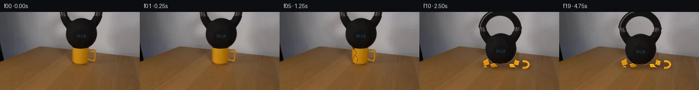

![首帧]()

Round 00
2026-11-05T11:53:38.168690+00:00像素候选变化代码 +291/−0inspection 更新
pixels 0eae0eea2d72f191 · code 0d5fd5790a9f55fe
查看本轮 generate.py 真实 diff
--- previous/generate.py +++ current/generate.py @@ -0,0 +1,291 @@ +#!/usr/bin/env python3 +"""Generate the 20-frame locked-shot ceramic load-failure continuation. + +The animation deliberately reuses source pixels for the photographed objects. +Only local pixel compositing, OpenCV inpainting/interpolation, and analytic +2-D drawing are used; there is no external model, renderer, or asset. +""" + +from pathlib import Path + +import cv2 +import numpy as np +from PIL import Image, ImageDraw, ImageFilter + +from artifact_io import save + + +ROOT = Path(__file__).resolve().parent +W, H = 256, 144 + + +def kettle_mask(source: np.ndarray) -> np.ndarray: + """Segment the connected dark kettlebell while retaining anti-aliased edge.""" + gray = cv2.cvtColor(source, cv2.COLOR_RGB2GRAY) + seeds = np.zeros((H, W), np.uint8) + roi = np.zeros_like(seeds) + roi[0:70, 106:190] = 1 + # Nearly all bell pixels are dark; a permissive threshold retains highlights. + seeds[(gray < 91) & (roi == 1)] = 1 + n, labels, stats, _ = cv2.connectedComponentsWithStats(seeds, 8) + # The body/handle assembly is the largest connected dark component in the ROI. + candidates = [i for i in range(1, n) if stats[i, cv2.CC_STAT_AREA] > 30] + keep = max(candidates, key=lambda i: stats[i, cv2.CC_STAT_AREA]) + hard = (labels == keep).astype(np.uint8) + hard = cv2.morphologyEx(hard, cv2.MORPH_CLOSE, np.ones((3, 3), np.uint8)) + # Include the dim edge fringe, but never grow outside the measured object ROI. + fringe = cv2.dilate(hard, np.ones((3, 3), np.uint8)) + fringe &= roi + hard[(fringe == 1) & (gray < 112)] = 1 + return cv2.GaussianBlur(hard * 255, (3, 3), 0.45) + + +def mug_mask(source: np.ndarray) -> np.ndarray: + """Segment saturated yellow ceramic including the thin handle.""" + hsv = cv2.cvtColor(source, cv2.COLOR_RGB2HSV) + roi = np.zeros((H, W), np.uint8) + roi[59:101, 127:179] = 1 + hard = (((hsv[..., 0] >= 7) & (hsv[..., 0] <= 38) & + (hsv[..., 1] > 80) & (hsv[..., 2] > 70)) & (roi == 1)).astype(np.uint8) + hard = cv2.morphologyEx(hard, cv2.MORPH_CLOSE, np.ones((2, 2), np.uint8)) + return cv2.GaussianBlur(hard * 255, (3, 3), 0.5) + + +def horizon_y(x: float) -> float: + """Piecewise back edge of the tabletop measured from the source.""" + if x <= 92: + return 93.0 - 0.315 * x + return 64.0 + 0.118 * (x - 92.0) + + +def clean_background(source: np.ndarray, removal: np.ndarray) -> np.ndarray: + """Reconstruct only pixels hidden by the original objects. + + Wall pixels use horizontal interpolation from visible wall. Table pixels + borrow perspective-aligned samples from both sides and retain fine grain. + A narrow boundary blend removes the compositing seam. + """ + bg = source.astype(np.float32).copy() + region = cv2.dilate((removal > 5).astype(np.uint8), np.ones((5, 5), np.uint8), 2) + ys, xs = np.nonzero(region) + for y, x in zip(ys, xs): + if y < horizon_y(x): + # Smooth wall: interpolate between unobstructed columns. + x0, x1 = 96, 199 + a = np.clip((x - x0) / (x1 - x0), 0.0, 1.0) + c0 = source[y, x0].astype(np.float32) + c1 = source[y, x1].astype(np.float32) + bg[y, x] = c0 * (1.0 - a) + c1 * a + else: + # Follow depth from the table edge when borrowing left/right wood. + depth = y - horizon_y(x) + xl = max(8, x - 72) + xr = min(W - 9, x + 72) + yl = int(np.clip(round(horizon_y(xl) + depth), 0, H - 1)) + yr = int(np.clip(round(horizon_y(xr) + depth), 0, H - 1)) + # Mix the two real wood samples; retain a small high-frequency term. + left = source[yl, xl].astype(np.float32) … diff truncated; 204 more lines …